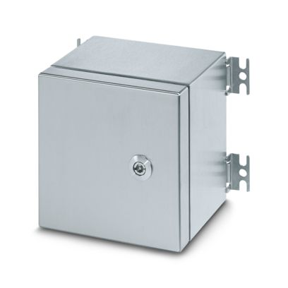
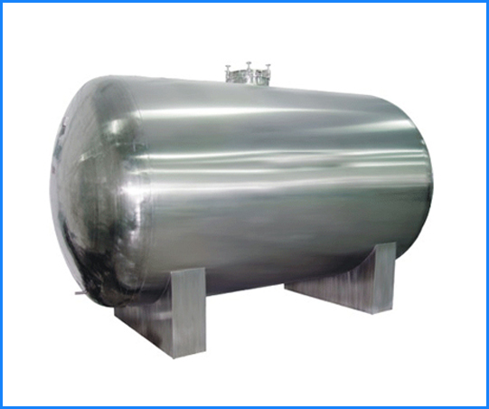
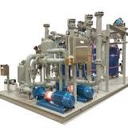
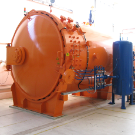
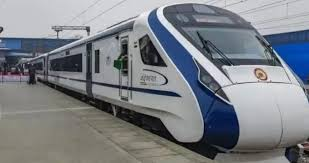
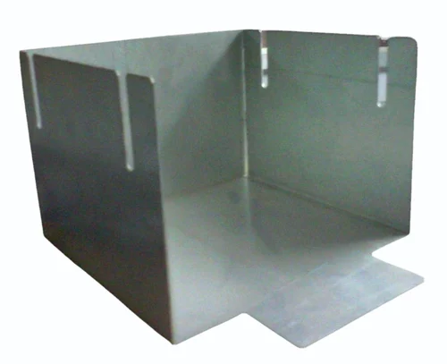

Our Products
Enclosures
| C S6 A 400X500X160 - Empty enclosure | |
|---|---|
|  |
Empty enclosure, material: Stainless steel, 316L/1.4404, surface resistance: brushed, silver, 400 mm x 500 mm x 160 mm, type of locking: Door with replaceable hinge, scope of supply - ATD: Door hinge with quarter turn locking, Mounting panel, Double-bit key, Fixing angle with mounting screws, M12 grounding bolts, affixed externally, Installation notes, Door hinge with quarter turn locking |
| 1) Junction Boxes | |
|---|---|

|
An instrument junction box is an enclosure housing terminals that allows interconnection between field devices (i.e. instruments, switches etc) in the process/production areas, and control or monitoring equipment typically located in the control room. |
2) Control Stations |

|
A comprehensive range of component approved increased safety Zone 1 and 2 Ex ‘e’ enclosures to suit varied power, control and instrumentation applications, suitable for a wide range of client projects in gas & dust hazard environments. Available from our extensive UK, components are stock ready to be engineered to specification for cable entry, through-door operators and indication. Variants are available with hinged doors, removable gland plates and security door furniture. |
| 50kA Tested Modular Enclosures | |
|---|---|
.jpg) |
50kA Tested Modular Enclosures. Available in knock-down kits, ready for assembly & wiring. With mödulo™ - Modular Enclosures you have design flexbility & production efficiency at your finger-tips.The enclosures are available ex-stock, helping you reduce dead inventory |
| Flameproof Enclosure Close Door, Ip 66 | |
|---|---|
|
We Serve Safety with Awareness of Electrical Safety Provided & meet all Requirement to Reduce Electrical Accident. In that Manner Our Team Regularly Develops Complete Mach to Flame & Explosion Standard as per CMFRI, BIS, PESO & European ATEX, IS IEC Standard. We Manufacture World largest Flameproof & Explosion Proof Enclosure, All Type & ranges of flameproof enclosures, Flameproof Light fittings, Flameproof Cable Glands, Flameproof Switchgear, Flameproof Control Gears, Flameproof Junction Boxes, Flameproof Industrial Fans, Flameproof Instrument Boxes, Flameproof VFD & PLC panels and other accessories. |
Process Equipments
| 1) storage tanks | |
|---|---|
|  |
We provide full customization on our storage tanks as per the specifications and requirements of the client. All the raw materials are used depending on usage of the tank and also as per client’s input. These tanks are corrosion resistant and easily withstand various temperature fluctuations and variations. These tanks have a wide demand in various processing industries because of them being highly qualitative at cost effective prices. |
| modular process skid | |
|---|---|
|  |
A modular process skid is a process system contained within a frame that allows the process system to be easily transported (skid mount). Individual skids can contain complete process systems and multiple process skids can be combined to create larger process systems or entire portable plants. |
| AUTOCLAVES | |
|---|---|
|  |
Various scientific operations in laboratories require hygiene, disinfection and sterilisation of glassware and instruments. Very large in size and highly specialised autoclaves have been used for this specific task in industrial laboratories. Other than dairy operations, food processing units, wineries autoclaves also play major role in rubber industry for vulcanisation of rubber i.e. thermoplastic process, or making something mouldable by applying heat at specific temperature and pressurised environment. |
Customised Products
| Cabinets | |
|---|---|
|  |
The Indian government’s ambitious programme of manufacturing 400 new Vande Bharat trains, announced in the Union Budget, is set to change the way people travel in the country. These modern train coaches will provide a new level of safety and comfort with enhanced speed. However, the recent tenders floated by the Indian railways for these trainsets have considered aluminium as the material of choice instead of stainless steel. It is presumed that aluminium coaches may reduce the weight of the coaches and save propulsion energy. However, when other prominent parameters are weighed, stainless steel emerges as the best fit to this project, and to the government’s vision for the Railways. Here’s why- stainless steel |
| Traction Panel | |
|---|---|
 |
Loco Panels are used to control various function of Locomotives. These panels are used for controlling and protection of VCB, traction converter, auxiliary converter and other related accessories inside locomotive. Coach Panels are used to control all the power / control switchgear in a coach. This includes lighting, air conditioning, hotel load, pump control, sanitary system and public address system etc. |
| Battery Panels Floor-Mount | |
|---|---|
|  |
Established as a Prprietor Firm in the Year 2022, We''Padmalekha Design And Manufacturing Centre'' are a leading Manufacturer of a wide range of sheetmetal products along with design support |